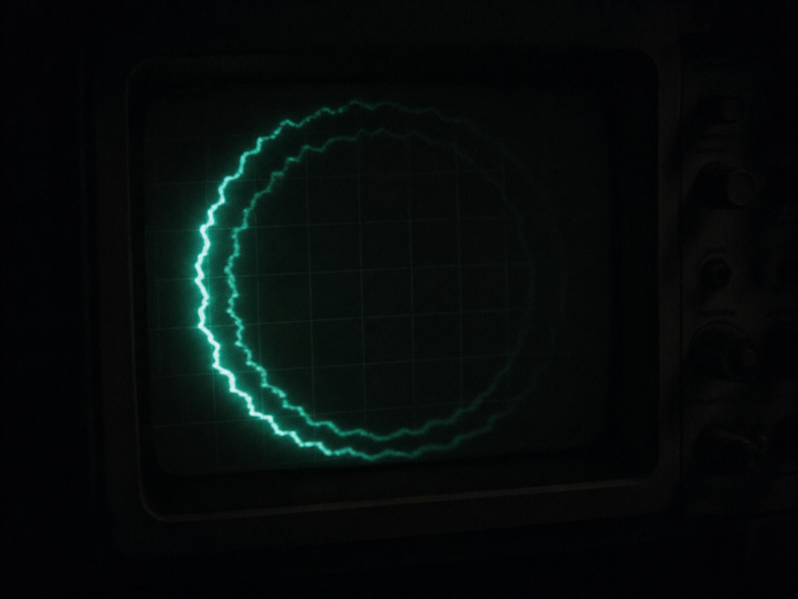

░░░░░░░░░░░░░░░░░░░░░░░░░░░░░░░░░░ · D E S C E N T · 28 / 40 · ░░░░░∞░░░░░░░░░░░░░░░░░░░░░░░░░░░░

Round and round on almost no power. Each pass leaves a faint trace of the last. Say a thing forever and it starts to answer back.